Wild Horse Plains Montana
Discovering the beautiful lower valley of the Clark Fork River, including land of the Shining Mountain, Paradise Philosophy sidebar (by Rube Wrightsman), Montana facts, at home in paradise, snow country apricots.
By Sara Pacher
November/December 1988
CREAM OF THE COUNTRY
A snow-country "banana belt."
By Sara Pacher
Photographs By Phil Schofield
YOU WON'T FIND "WILD HORSE Plains" on a Montana map, because that name for the lushly beautiful lower valley of the Clark Fork River, in what is now the southern half of Sanders County, is no longer used. Protected by the Cabinet Mountains on the north, the Bitterroot Range on the west and the Mission Range on the east, the
valley's climate is almost Pacific maritime, causing some of its residents to complain during recent winters that they can't get their fill of cross-country skiing because there's not enough snow. For this reason, Native Americans wintered their horses on the valley's abundant bunch grass long before the first settlers arrived. Later, fur trappers of the
Hudson's Bay Company did the same.
Horses, though not wild ones, still roam this rich land, and the name survives in the county's most pleasing town of Plains (pop. 1,090), known as Horse Plains until 1883, when the Northern Pacific Railway passed through, and the post office was moved into town from its location at the old Clark/Lynch Ranch, a former stop on the Pony Express. Cattle are still big business here, too.
Land of the Shining Mountains Let me tell you some of my impressions of this special place. First of all, it's "Big Sky Country." Despite the impressive, often snow-covered peaks in almost every direction, there's never a closed-in feeling. You can stand on a sunny hillside alive with meadowlarks, look across an impossibly wide valley of waving grain and fruit trees to the silvery light of a rainstorm drenching a distant mountainside, and wait for the almost inevitable rainbows. The Clark Fork River (formerly called the Saleesh), which flows through the plains, is as wide in places as a good-sized lake, and the trees along its banks are frequently adorned with osprey nests. Spring snowmelt can make for fast canoe or raft rides, but the water gentles in summer, presenting dozens of fine beaches and swimming holes. (Otters and beavers commonly share the recreational opportunities!)
In addition, there are nearby lakes. Sailboaters and windsurfers are just an hour away from the very deep and magnificent 200-square-mile Flathead Lake, the largest freshwater lake in the western United States. Its sky blue water, bordered by the majestic Mission Range, is renowned to fishermen for its cutthroat and Dolly Varden trout, its Mackinaw and kokanee salmon. There are also excellent whitefish, bass in protected bays, and perch in fall and winter. Flathead Lake is a tourist destination, but even in midsummer, you might have one of the smaller fish-filled lakes in the north or just outside of the county practically to yourself.
(Stay for the night, and you'll be serenaded by loons and great horned owls.) The feeling of open space extends even to the heavily forested canyons and hillsides of soaring larch, ponderosa pine, Douglas fir, hemlock and cedar. Thick layers of the conifers' fallen needles keep down much of the undergrowth, offering plenty of chances to see large white-tailed deer gamboling through the woods. Elk, black bear and Rocky Mountain goats are not uncommon, and bighorn sheep often wander down from rugged mountainsides to drink from rivers and streams. Golden and bald eagles, red tailed hawks and Canada geese decorate the skies, while magpies make streaks of black and white across the usually empty highways.
On the negative side, the fields and woods are home to wood ticks and timber rattlers. In season, the ticks are voracious, but the snakes, I'm told, are remarkably shy and unaggressive. This must be true, because Doreen Binkiewicz, a reforestation contractor who camps out in the woods while overseeing her tree-planting operations and spends her leisure time in a cabin in a remote canyon, says she's never even seen a rattler in the area. Even mosquitoes aren't much of a problem except in some of the lower lying regions. Though most of the county's residents seem to prefer cross-country skiing, downhill buff's pursue that sport an hour or so away at The Big Mountain ski resort overlooking Whitefish Lake just north of the pretty, tree-lined city of Kalispell (pop. 11,890). Spectacular Glacier National Park is only a short distance from there, while Sanders' southeastern section contains part of the National Bison Range (established by Teddv Roosevelt in 1908). There, a herd of more than -100 buffalo roams over nearly 19,100 acres of natural grassland.
Southern Sanders County also includes part of the Flathead India Reservation, which, taking in Flathead Lake, must be one of the most beautiful reservations in the country. Home of the Confederated Salish and Kootenai Tribes, it also contains the spa town of Hot Springs, whose thermal mineral waters have been popular for various ailments since the first settlers arrived in about 1910. The old resort, located on one side of a beautiful bowl of a valley, has become rundown since its heyday but stepping into the Symes Hotel is like taking a journey back to the 1930s. It offers a double room with bath for $15 a night, and $2 will get you a mineral bath in a private cubicle complete with a Victorian tub.
Fashion doesn't count for much in a
town where getting an elk brings more status than getting a new Mercedes.
Just to the east of Hot Springs are the flatlands of the Camas Prairie, the driest area in Montana, while the northern part of Sanders Countv, near Noxon, is the state's wettest. This northern section-which includes part of the Cabinet Mountains Wilderness Area-is colder, more rugged and heavily forested and is a favorite of fishermen and hunters. The Huckleberry Festival, held in Trout Creek (pop. 434) the second weekend in August, is a big annual event.
ILLUSTRATIONS BY ALISON SEIFFER
MAP BY DON OSBY
MONTANA FACTS
Average Annual Wage (1986)
Montana $16.084
Sanders Co. $14,176
Unemployment (1987)
Montana 7.4%
Sanders Co. 12.3%
At Home in Paradise
With all this to offer, it's no surprise that other old names for Wild Horse Plains were "Paradise Valley" and "Paradise Plains." Those names are still reflected in the tiny town of Paradise (pop. 200, "if you count the dogs and cats") just six miles south of Plains. The railroad passes through here, and across from the depot are the few business establishments that make up the town: a cafe and general store (newly reopened), the American Legion Bar (open to the general public), a filling station and garage, a post office (which, due to recent cutbacks, the federal government is threatening to close), the PairA-Dice Club (some folks say dice are what really gave the town its name) and the friendly Rails Cafe ("for all the railroad workers or 'rails'-past, present and future"), where you can get a bottomless cup of coffee for 35 cents.
This small restaurant was the first stop of my visit to Montana (after an hour-and-a-half drive from Missoula); it became my second home while in the area. Just seven miles south, near where the Clark Fork joins with the Flathead River, is Quinn Springs, another long-time hot springs resort, now with a campground, cabins, general store, restaurant and bar. Local women meet three times a week, summer and winter, for water aerobics in the 86°F outdoor swimming pool and for soaks in the much hotter whirlpool.
Jim Stokes, who was born and raised on a farm in Ashland County, Ohio, first came west on a trip to the Canadian Rockies during a school break. "I went back to Ohio and started doing pretty well shoeing horses. But there were just too many people in Ohio, and I missed the mountains, so I came back out and stumbled into tree-planting near Salmon, Idaho, which is just south of here across the border. "At first, I liked the traveling involved in tree planting, but after a while it gets old. So, when the tree crew was based in Superior, Montana, I got to snooping around, and I found Paradise. Even if it were nothing else, it's just a heck of an address to have!" Jim bought 40 acres of wooded land ("I paid for it in two-and-a-half years," he notes triumphantly) five miles up from Paradise on McLaughlin Creek.
He lived in a tent all one winter while building a charming two-room cabin with a sleeping loft, using mostly a chain saw. He cut the logs from trees on his own property, and with the help of his horse Aggie, which he brought from Ohio as a colt, he pulled them to the site. "I'd never built anything before or read anything about building, either," he continued, "and all I had were green logs that I had just peeled. But this old guy, Ken Peters in Superior, told me what to do. You put uprights up and flatten them on the sides that the walls attach to. Then you notch grooves in the uprights with your chain saw, so you can put 2 X 4s in there. They stick out about halfway, and those are your tongues. Then you notch your logs with a groove.
You slide the logs down those 2 X 4s, so the whole thing is tongue-and-grooved. Next, you take your chain saw in between the logs and knock all the knots and warped spots out until the logs fit totally flat. Then you lift them up, put a little layer of insulation in there, and keep doing that. As the logs dry, they settle down, because they're tongueandgrooved on the ends. As a result, there are no gaps. The walls aren't chinked or anything. I've lived in the cabin six years now, and it's as tight as you'd ever want."
His friends still recall with a little awe that Jim was putting on his cabin's roof on Christmas Eve by the light of a Coleman lantern. The fact that he wasn't miserable in the tent that served as his temporary home says a lot for the climate here. "The winters in Paradise Plains aren't as hard as they are in my home in Ohio, but nobody back there can understand that," he laughs. "I'm always getting a letter from my mom or sisters saying, `Oh, you poor thing! We hear on the weather report that Montana is really getting it!' And, golly, it's nice here. It's real good weather."
Paradise has a population of 200, "if you count dogs and cats."
He'd eventually like to make his living as a blacksmith, and already forges utilitarian objects, such as fire pokers and candlestick holders, that are small works of art. In the meantime, he contracts as a horse logger in areas the Forest Service doesn't want to spoil by bringing in heave logging equipment.
Re cently, he's also been foreman of a tree planting business owned by his friend, Doreen. The two of them have bought another 75 acres in Eagle Valley on the other side of Paradise, which Jim intends to farm with horses.
"Jim's place is at 4,500 feet. It's a lot colder there than in Paradise, which is at 2,500 feet," explains Doreen. After commuting between her home in Oregon and Montana for a couple of years, she moved to Paradise permanently two years ago. "Down at river level we can grow fruits and berries and have a good garden. Most people would be amazed at the things you can grow here!" I certainly was. And even though during most years it's necessary to irrigate, wells usually come in at about 45 feet.
Snow Country Apricots
In this warm, fertile valley, the last spring frost occurs about the end of May and the first fall frost about the first of October. When I was there in mid-May, flowers, including the lilacs that surround almost every house, were in full bloom-only about two weeks behind those around my western North Carolina home. In addition, this far north, the summer days are long. It doesn't get dark until around 10:00 at night, giving plants a lot of light to grow by. Though most farmers in this region grow hay, oats, barley and alfalfa, as they have for decades, some residents think that the sandy loam in the lower parts of the valley should be utilized in other ways. Even now, 20 varieties of apples, five varieties of plums, three varieties of pie cherries and two varieties each of apricots, peaches, sweet cherries and grapes thrive near Paradise.
About 25 miles southeast in Dixon (pop. 369), Harley and Joey Hettick (Harley's a freelance photographer) have had such success in commercially farming an acre of cantaloupes, they now plan to expand their operation to five acres. Just to the east of Plains, Bruce Icenoggle, who works in the local bank, is putting in four acres of baby's-breath and other flowers suitable for drying. He already has California markets lined up for the flowers. Lawyer Nursery, established in 1965 between Plains and Thompson Falls, has hundreds of acres under cultivation and ships its sturdy, northern-grown stock all over the Pacific Northwest, Canada and even to Tennessee.
"Though I've seen the scenery
a hundred times before, I tend to drive slowly, just so I can gawk."
Seaman's Nursery is much smaller, but no less a success story. Ted and Barbara Seaman arrived in Paradise from Colorado five years ago with $150. The first winter, they lived in a small cabin without electricity or running water and earned money by cutting and selling wood. Today, they've bought and leased land across the highway from Quinn Springs and use the hot springs' run-off to heat 10 greenhouses. Aside from selling locally, including a winter lettuce crop to restaurants, Ted's plants are found in stores in Missoula and Kalispell and as far away as Spokane, Washington. (He, too, wants to expand his operation to other greenhouses he hopes to build in Hot Springs.)
In the meantime, Barbara, an acupuncturist, has opened the Paradise Holistic Health Center across the road at Quinn Springs. For the most part, though, the problem with truck farming in this sparsely populated area is a lack of nearby markets. Also, with the possible exception of Trout Creek, there seems to be little activity in the arts and crafts despite being on a direct route to Glacier National Park and other tourist attractions. True, I-90, which parallels the Wild Horse Plains' Highway 200, gets most of the traffic, and many people coming from the Glacier and Whitefish/Kalispell area cut over at Plains to Flathead Lake.
Yet, one morning while I was having breakfast at the Rails Cafe, three different carloads of tourists stopped by: one to eat and two to ask directions. But unlike so many rural areas in which jobs are hard to come by, arts and crafts entrepreneurs aren't really tapping into the tourist trade. This prompted me to ask how people entertain themselves during the winter. The answer was always the same: "We read."
The Friendliness Factor
Perhaps it's this penchant for books that makes just hanging out in some bar, restaurant or someone's home so entertaining. The conversation and wit never seem to lag. Notable, too, is the lack of age discrimination when it comes to socializing. Young and old are often "best friends." Even Jim Stokes, who tends to be a loner, was drawn in by the friendliness of the folks. "I had long hair when I came here, but that caused no problems. I soon felt right at home in the Legion Bar in Paradise. There are lots of people over 70 years old there-old railroaders and loggers who like to talk and tell stories-and I like to listen to them." Mary Lynn Vanderhoff, the owner of a realty company in Plains and who descends from some of the first settlers, agrees. "People are very friendly. They immediately want to know where you come from and what you do and all about your family.
Such openness puts some newcomers off: But, in fact, we're all newcomers. The first white family didn't arrive until 1870, so nobody goes back more than three generations. And like all those early settlers, we welcome new faces." Plains is an especially congenial family oriented town.
"It seems like everyone in Plains has three children," Doreen remarked. "The town has a very good school system and is particular ly proud of its basketball team, though the football team isn't much to brag about." "I guess the kids are just too relaxed to produce the competitive energy it takes to make a good football team," Mary Lynn concluded. "But that applies to adults, too.
Nobody comes to this area to make big bucks." With plenty of fish and game, and a good garden, you might not need a lot of money. Certainly, land is a bargain. Jim and Doreen's 75 acres of farm and woodlands, with a burned-down homesite, electric lines and a road already in, cost $45,000.
Higher in the mountains, where the land is rocky, I saw a three-room cabin with a wind generator and 40 acres that could have been picked up for around $25,000. Generally speaking, a nice one-acre lot goes for $7,000 to $10,000; 10 acres of good farmland from $1,000 to $2,000 per acre; 20 to 40 acres from $300 to $750 per acre; and 400 acres of semiarid pastureland can be found for as low as $83 an acre. For a 10- to 15-yearold house with seven to 10 acres, count on paying from $45,000 to $65,000. Not only is land reasonable, but there seems to be plenty of property for sale, which is surprising if you consider that out of the 1,791,360 acres that make up Sanders County, 922,688 acres are federal land, 62,801 acres are owned by the State, and 227,075 acres belong to the Indians.
Reasonably priced rentals are readily available, too. "That's because a lot of people can't make a go of it here," Ted warns. "I've seen those who've sold their homes in the city for a bunch of money. They come here and buy a place and a four-wheel-drive truck. After a year or so, their money runs out and there's no work. They have to sell out and go back to the city. It happens all the time." A Personal Note
And, no doubt, it will keep happening. I know I was certainly tempted by the area's dramatically scenic beauty, its low land prices and the warmth of its people. "Everything's so much slower here," Jim Stokes notes. "You don't go by the clock; you go by what you feel like doing. If you have to be somewhere by a certain time, it's almost an intrusion, because you're not used to rushing. You almost refuse to rush. I drive down the highway, and nobody's on it but me. Though I've seen the scenery a hundred times before, it's just so pretty out here! I tend to drive slowly just so I can gawk."
"It's soothing," Doreen agreed. "All this wide-open space is restful.
" That's an understatement. Yet, what I'm going to tell you next may seem strange, but I'm sure the folks in this region will understand it perfectly. It happened twice. The first time, I'd been in the area for only three days and was driving through the Camas Prairie. The next day, it occurred again on the road just east of Quinn Springs. Each time, a feeling of great peace and relaxation suddenly flowed throughout my body.
At first, I just accepted it, then I realized its source. It was coming to me from the land itself. It was speaking-no, singing-to me . It gave a whole new meaning to the song, "The Hills Are Alive With the Sound of Music." That might sound corny, but the feeling definitely wasn't. It was wonderful.
PARADISE
PHILOSOPHY
By Rube Wrightsman
LIKE DARK BEER AND SQUARE dancing, Paradise, Montana, isn't for everyone. At one time, I worried that the eastern hordes would someday discover this place and turn it into a slice of Manhattan, but that possibility doesn't bother me anymore. Every year, about a dozen people move in and about a dozen move out, often the same ones. The reason for leaving is always the same: no jobs. It's possible to make a living around Paradise, but not a good one. Most jobs are seasonal, low paying, physically wretched and still hard to find. In Paradise, people live on their wits and their valor instead of working for "The Man.
" Being eternally semi employed creates occasional anxieties, but it also brings an elegant sense of freedom. Every day offers the chance of adventure, and those who stay aren't so much the ones who can accept uncertainty as the ones who thrive on it. Accordingly, the folks around Paradise tend to be a tad different from mainstream Americans. Nestled among these craggy draws and gulches lives a motlev collection of the most independent-minded bunch of merry misfits you're likely to find anywhere in the Galaxy.
To say that no two of them are alike is to commit a felonious understatement. It's as if Beethoven, the Sex Pistols, and Homer and Jethro were on the same record album. In spite of this melange, or perhaps because of it, Paradise lacks the rowdiness and cosmic energy that characterize other parts of the West. No particular bizarreness prevails, because each person has his or her own, and the resulting balance creates a genial amicability. Trolls live in Wyoming, Oregon has elves, and California is overrun with wizards.
Paradise is populated by hobbits: sturdy, unassuming folks with furry toes, who cheerily go about their daily business with a modicum of indifference toward the rest of the world, but who can always be counted on in a pinch. Paradise's resemblance to Hobbiton is its greatest attribute. People still care about each other here, and everyone has a niche in the community, whether thev want it or not. In a place this small, everyone knows who and what everyone else is, and "nobody gets away with nothin'." In many ways, we're a boondock anachronism. So many people live up in the woods without electricity or plumbing that no one considers it an "alternative lifestyle." In fact, after a while, one gets to believing that Paradise really isn't any different from the rest of the United States. A trip to the city, even a little nerdy one like Missoula, quickly dispels this myth. Moseying around the shopping mall, despite being all duded up for town, the average Paradisian still looks like Jed Clampett.
Get one of us in a real city, such as Denver or Seattle, and it's like Attila the Hun at the Bolshoi. It's not that we're crude or lacking in the social graces; our priorities are just a little different. Life in the fast lane is difcult on Forest Service roads, and fashion doesn't count for much in a town where getting an elk brings more status than getting a new Mercedes. It's a lifestyle that some people like, some don't like and some dream about. Some of those dreamers come to Paradise, and a few even end up staying. They don't come here to find good jobs, because there aren't any. They don't come here to homestead, because no one is going to sodbust their way to financial independence on a 40-acre stump farm so steep and rocky that it's only fit for raising wood ticks and rattlesnakes. The reason people here endure grunt labor and low wages is as elusive and as difficult to explain as the sound of one hand clapping. But as that infamous poet, Jerry Garcia, once put it:
"Once in a while you get shown the light/In the strangest of places if you look at it right." On a crisp fall day up in the mountains, coming out with a full load of firewood, the left rear tire goes flat. Nothing for it but to swear and sweat, unload the wood and dig through the empty beer cans and other assorted trash for the jack and lug wrench. Then a miracle happens! Amongst all the junk is a full can of beer that somehow survived the last cookout on the riverbank.
After receiving such a Holy Gift, all activity ceases except for popping the ring and lowering the tailgate to use as a bench. Suddenly, everything stops, and the world is revealed in its timeless clarity. All around, the larch are turning yellow and the mountaintops are dusted with early snow. The smell of pine rides through the air on the sound of the wind, and the afternoon sunlight filters through the dark conifers as if for the first time. Away in the distance and far below, barely visible between two steep ridges, sits the little town of Paradise beside the green ribbon of the river. Even from this far away, it looks like a very humane place to live. All too soon the beer is finished, and it's time to get on with changing the tire and reloading the firewood, but somehow that brief glimpse of Paradise makes it all worth it.
Rube Wrightsman-philosopher, guitarist, amateur astronomer and master mead
maker-writes an award-winning weekly column, "Hey, Rube, "for The Clark Fork Valley Press from his cabin in the woods. Once, when asked how he plans to support himself in his old age, Rube replied, "I'll get a shillelagh. "
|
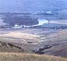 Wide enough in spots to seem almost lakelike, the Clark Fork River is warm and serene enough in summer to make it a favorite for canoeing. |
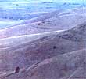 Nowrare residents of the 0ld West still make their homes among these spectacular peaks. The antlers stacked here were dropped by elk. |
 David Thompson, the first white man to travel through this region, noted in 1810 that 11... it is admirably adapted to cattle rearing."" |
|
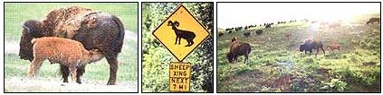 ""Paradise philosopher"" Rube< br /> Wrightsman< br /> at his ""hobbit< br /> house"" with< br /> his fine homemade< br /> mead. |
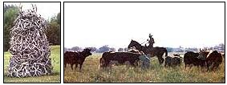 Retired ""rail"" 0rvile (84) and Gladys (80) Schutter have lived in Paradise for 40 years. |
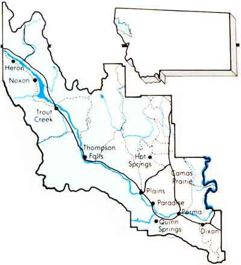 Blacksmith horse-logger Jim Stokes with his assistant, Aggie,the horse. |
|
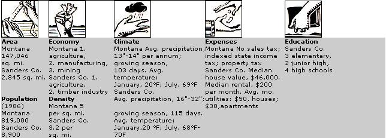 ""The Drunk of the Week"" is nominated and posted at the Dixon Bar ""For your behavior last Friday night, including, etc., etc."" |
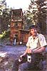 Freelance photographer Harley Hettick's passion for cantaloupe has turned into a business. |
Some folks complain that Plains is ""too friendly"". |
|
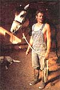 Ted and Barbara Seaman capture a hot spring's runoff to heat their organic green- houses. |
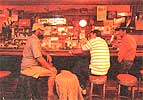 |
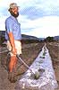 |
|
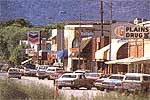 |
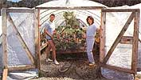 |
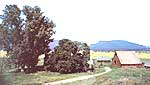 |